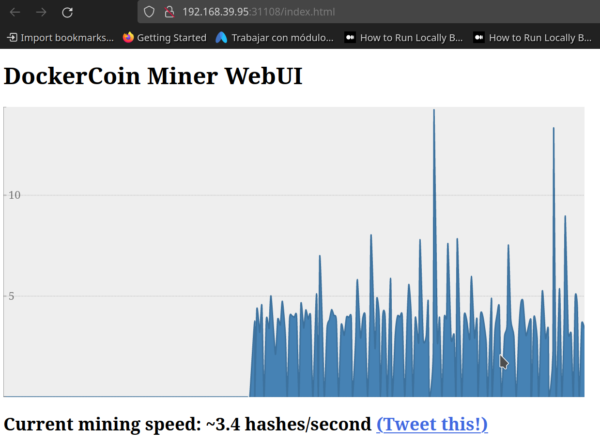

Azure Kubernetes Service¶
En este lab se mostrara como levantar un container registry y un cluster en Azure, y luego se desplegara la aplicacion Docker Coins.
Crear los recursos en Azure¶
- Crear el
Container Registrypara subir las imagenes de docker:
Con estos comandos ya se tiene un cluster y un acr para empezar a desplegar aplicaciones Ahora bien para poder manipular estos dos desde la terminar se deben ejecutar los siguientes comandos
Acceder a los recursos desde la terminal¶
- Login en el
ACR, para poder publicar imagenes -
Obtener el nombre dominio del nuevo container registry.
Para subir una imagen al registry se debe nombrar de la siguiente formaaz acr show --name solok8sregistry --query loginServer --output table # Result # -------------------------- # solok8sregistry.azurecr.io<registry>/<name>:<tag>, en este caso a modo de ejemplosolok8sregistry.azurecr.io/regis:latest -
Obterner las credenciales de acceso al Cluster
Ya se puede acceder al cluster con kubectl
Subir Docker Coins al Nuevo Cluster¶
Se deben seguir los mismos pasos que con minikube, pero previamente estando autenticado en el ACR y el Cluster.
1. Renombrar las imagenes que se quieren subir al nuevo ACR
docker tag dockercoins_worker solok8sregistry.azurecr.io/docker-coins-worker-app
docker tag dockercoins_hasher solok8sregistry.azurecr.io/docker-coins-hasher-app
docker tag dockercoins_rng:latest solok8sregistry.azurecr.io/docker-coins-rng-app
docker tag dockercoins_webui solok8sregistry.azurecr.io/docker-coins-web-ui-app
ACR
docker push solok8sregistry.azurecr.io/docker-coins-worker-app
docker push solok8sregistry.azurecr.io/docker-coins-hasher-app
docker push solok8sregistry.azurecr.io/docker-coins-rng-app
docker push solok8sregistry.azurecr.io/docker-coins-web-ui-app
yaml que se usaron con minikube. Applicar los archivos de configuracion
$ kubectl apply -f config.yaml && kubectl apply -f services.yaml \
&& kubectl apply -f deployment.yaml
# configmap/redis-configmap created
# configmap/redis-sysctl created
# service/web-ui created
# service/redis created
# service/hasher created
# service/rng created
# deployment.apps/web-ui created
# deployment.apps/worker created
# deployment.apps/redis created
# deployment.apps/hasher created
# deployment.apps/rng created
# pod/dnsutils created
# service/web-ui created
# service/redis created
# service/hasher created
# service/rng created
NAME READY STATUS RESTARTS AGE
hasher-6fd7cfd7bf-8v86t 1/1 Running 0 7m51s
redis-594c4d767f-8xfrd 1/1 Running 0 7m51s
rng-648c7c46c7-qrn2m 1/1 Running 0 7m51s
web-ui-57b7674785-7cfj2 1/1 Running 0 7m51s
worker-67ff756f89-wvmt4 1/1 Running 0 7m51s
1:C 21 Jun 2022 20:47:44.841 # oO0OoO0OoO0Oo Redis is starting oO0OoO0OoO0Oo
1:C 21 Jun 2022 20:47:44.842 # Redis version=7.0.2, bits=64, commit=00000000, modified=0, pid=1, just started
1:C 21 Jun 2022 20:47:44.842 # Configuration loaded
1:M 21 Jun 2022 20:47:44.842 * monotonic clock: POSIX clock_gettime
1:M 21 Jun 2022 20:47:44.843 * Running mode=standalone, port=6379.
1:M 21 Jun 2022 20:47:44.843 # WARNING: The TCP backlog setting of 511 cannot be enforced because /proc/sys/net/core/somaxconn is set to the lower value of 128.
1:M 21 Jun 2022 20:47:44.843 # Server initialized
1:M 21 Jun 2022 20:47:44.843 # WARNING overcommit_memory is set to 0! Background save may fail under low memory condition. To fix this issue add 'vm.overcommit_memory = 1' to /etc/sysctl.conf and then reboot or run the command 'sysctl vm.overcommit_memory=1' for this to take effect.
INFO:__main__:4 units of work done, updating hash counter
INFO:__main__:4 units of work done, updating hash counter
INFO:__main__:4 units of work done, updating hash counter
INFO:__main__:4 units of work done, updating hash counter
INFO:__main__:Coin found: 0c7d1044...
INFO:__main__:4 units of work done, updating hash counter
INFO:__main__:Coin found: 0fe2be6c...
INFO:__main__:4 units of work done, updating hash counter
INFO:__main__:4 units of work done, updating hash counter
INFO:__main__:4 units of work done, updating hash counter
172.17.0.1 - - [21/Jun/2022:20:51:50 +0000] "POST / HTTP/1.1" 200 64 0.1007
172.17.0.1 - - [21/Jun/2022:20:51:50 +0000] "POST / HTTP/1.1" 200 64 0.1008
172.17.0.1 - - [21/Jun/2022:20:51:50 +0000] "POST / HTTP/1.1" 200 64 0.1006
172.17.0.1 - - [21/Jun/2022:20:51:50 +0000] "POST / HTTP/1.1" 200 64 0.1007
172.17.0.1 - - [21/Jun/2022:20:51:51 +0000] "POST / HTTP/1.1" 200 64 0.1007
172.17.0.1 - - [21/Jun/2022 20:52:03] "GET /32 HTTP/1.1" 200 -
172.17.0.1 - - [21/Jun/2022 20:52:03] "GET /32 HTTP/1.1" 200 -
172.17.0.1 - - [21/Jun/2022 20:52:03] "GET /32 HTTP/1.1" 200 -
172.17.0.1 - - [21/Jun/2022 20:52:04] "GET /32 HTTP/1.1" 200 -
172.17.0.1 - - [21/Jun/2022 20:52:04] "GET /32 HTTP/1.1" 200 -
172.17.0.1 - - [21/Jun/2022 20:52:04] "GET /32 HTTP/1.1" 200 -
WEBUI running on port 80
80
kubectl port-forward svc/web-ui 8011:80
7. Abrir en el navegador la url localhost:8011
